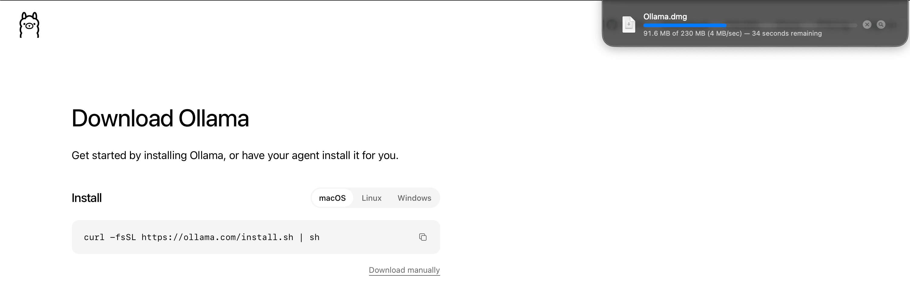
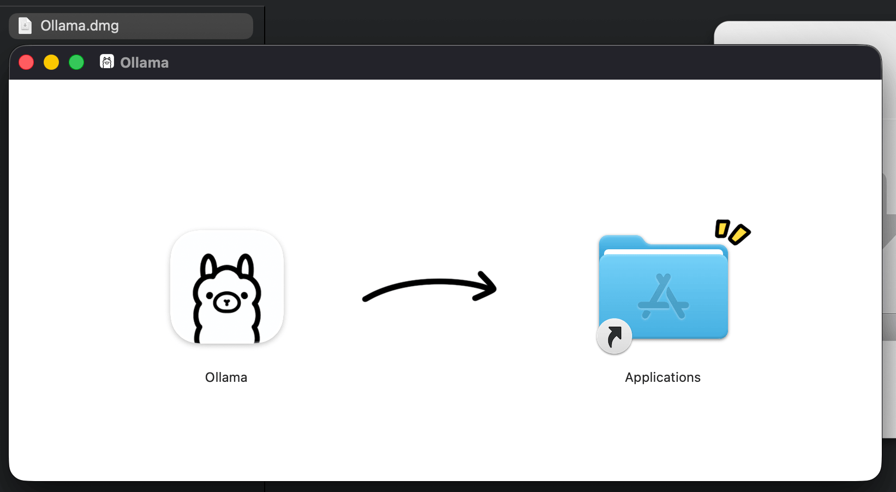
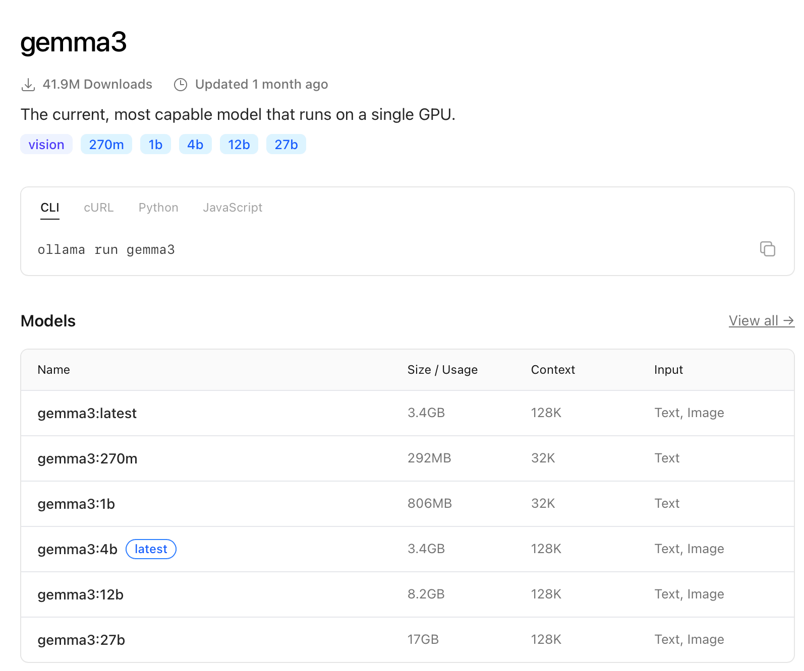
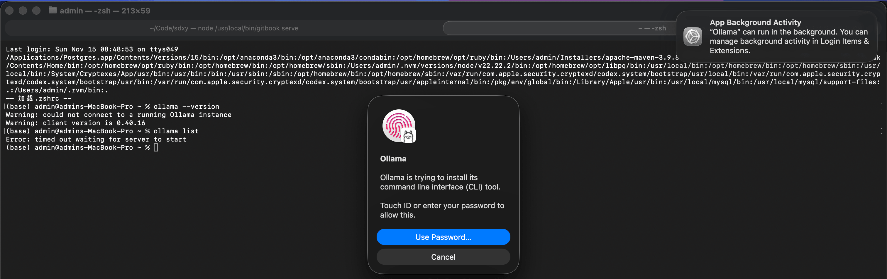

1. Use Ollama
1.1. Resources
1.2. Install The Ollama
- 打开Ollama网址，点击
Download manually按钮下载
- 双击下载好的
Ollama.dmg，移入Applications，完成安装
测试
ollama命令ollama --version出现问题：
(base) admin@admins-MacBook-Pro langchain % ollama zsh: command not found: ollama修改问题：
ln -sf "/Applications/Ollama.app/Contents/Resources/ollama" /opt/homebrew/bin/ollama重新运行：
(base) admin@admins-MacBook-Pro ~ % ollama --version Warning: could not connect to a running Ollama instance Warning: client version is 0.40.16/opt/homebrew/bin这个目录一直都在，而且本来就在你的PATH里。之前缺的是里面那个叫ollama的文件。用.dmg安装时，命令行程序只放在应用包里：/Applications/Ollama.app/Contents/Resources/ollama它不会自动出现在/opt/homebrew/bin。这个目录是 Homebrew 用来放自己安装的命令的；你这次不是用brew install ollama装的，所以那里原来没有ollama。官方应用第一次打开时，通常会在
/usr/local/bin/ollama建链接，也不会写到 Homebrew 的目录。当时这两个位置都没有这个文件，所以终端报command not found。我后来执行的ln -sf才在/opt/homebrew/bin/ollama建了链接。新开的终端能找到它，是因为这个目录已在PATH里，而文件是那时才出现的。
1.3. Install the gemma3
- 打开gemma3

- 查看当前models
出现问题：ollama list

你打开了 Ollama 应用，它要在 /usr/local/bin/ollama 安装官方命令行工具，这个目录属于系统，所以要 Touch ID 或密码。点 Use Password... 并允许即可。(base) admin@admins-MacBook-Pro ~ % ollama list NAME ID SIZE MODIFIED Install the gemma3:270m
ollama pull gemma3:270mfinished:
(base) admin@admins-MacBook-Pro ~ % ollama pull gemma3:270m pulling manifest pulling 735af2139dc6: 100% ▕███████████████████████████████████████████████████████████████████████████████████████████████████████████████████████████████████████████████████████▏ 291 MB pulling 3e2c24001f9e: 32% ▕█████████████████████████████████████████████████ ▏ 2.7 KB/8.4 KB pulling 74156d92caf6: 100% ▕███████████████████████████████████████████████████████████████████████████████████████████████████████████████████████████████████████████████████████▏ 490 B verifying sha256 digest writing manifest success (base) admin@admins-MacBook-Pro ~ % ollama list NAME ID SIZE MODIFIED gemma3:270m e7d36fb2c3b3 291 MB 9 seconds agohelp:
ollama --helpshow:
(base) admin@admins-MacBook-Pro ~ % ollama --help Large language model runner Usage: ollama [flags] ollama [command] Available Commands: serve Start Ollama create Create a model show Show information for a model run Run a model stop Stop a running model pull Pull a model from a registry push Push a model to a registry signin Sign in to ollama.com signout Sign out from ollama.com list List models ps List running models cp Copy a model rm Remove a model launch Launch the Ollama menu or an integration help Help about any command Flags: -h, --help help for ollama --nowordwrap Don't wrap words to the next line automatically --verbose Show timings for response -v, --version Show version information Use "ollama [command] --help" for more information about a command.- Run gemma3:270m
show:ollama run gemma3:270m(base) admin@admins-MacBook-Pro ~ % ollama run gemma3:270m 输入 hello Hello! How can I help you today? 输入 Send a message (/? for help)
1.4. Using ollama in the code
- Import
from langchain_ollama import ChatOllama - Using ollama
llm = ChatOllama(temperature=0, model="gemma3:270m") 出现错误：
[Running] /Users/admin/Code/langchain/.venv/bin/python -u "/Users/admin/Code/langchain/main.py" Hello from langchain! Traceback (most recent call last): File "/Users/admin/Code/langchain/main.py", line 41, in <module> main() File "/Users/admin/Code/langchain/main.py", line 36, in main response = chain.invoke(input={"information": information}) ^^^^^^^^^^^^^^^^^^^^^^^^^^^^^^^^^^^^^^^^^^^^^^^^ File "/Users/admin/Code/langchain/.venv/lib/python3.12/site-packages/langchain_core/runnables/base.py", line 3475, in invoke input_ = context.run(step.invoke, input_, config) ^^^^^^^^^^^^^^^^^^^^^^^^^^^^^^^^^^^^^^^^ File "/Users/admin/Code/langchain/.venv/lib/python3.12/site-packages/langchain_core/language_models/chat_models.py", line 529, in invoke self.generate_prompt( File "/Users/admin/Code/langchain/.venv/lib/python3.12/site-packages/langchain_core/language_models/chat_models.py", line 1920, in generate_prompt return self.generate(prompt_messages, stop=stop, callbacks=callbacks, **kwargs) ^^^^^^^^^^^^^^^^^^^^^^^^^^^^^^^^^^^^^^^^^^^^^^^^^^^^^^^^^^^^^^^^^^^^^^^^ File "/Users/admin/Code/langchain/.venv/lib/python3.12/site-packages/langchain_core/language_models/chat_models.py", line 1727, in generate self._generate_with_cache( File "/Users/admin/Code/langchain/.venv/lib/python3.12/site-packages/langchain_core/language_models/chat_models.py", line 2065, in _generate_with_cache result = self._generate( ^^^^^^^^^^^^^^^ File "/Users/admin/Code/langchain/.venv/lib/python3.12/site-packages/langchain_ollama/chat_models.py", line 1200, in _generate final_chunk = self._chat_stream_with_aggregation( ^^^^^^^^^^^^^^^^^^^^^^^^^^^^^^^^^^^ File "/Users/admin/Code/langchain/.venv/lib/python3.12/site-packages/langchain_ollama/chat_models.py", line 1135, in _chat_stream_with_aggregation for chunk in self._iterate_over_stream(messages, stop, **kwargs): ^^^^^^^^^^^^^^^^^^^^^^^^^^^^^^^^^^^^^^^^^^^^^^^^^^^ File "/Users/admin/Code/langchain/.venv/lib/python3.12/site-packages/langchain_ollama/chat_models.py", line 1224, in _iterate_over_stream for stream_resp in self._create_chat_stream(messages, stop, **kwargs): ^^^^^^^^^^^^^^^^^^^^^^^^^^^^^^^^^^^^^^^^^^^^^^^^^^ File "/Users/admin/Code/langchain/.venv/lib/python3.12/site-packages/langchain_ollama/chat_models.py", line 1122, in _create_chat_stream yield from self._client.chat(**chat_params) File "/Users/admin/Code/langchain/.venv/lib/python3.12/site-packages/ollama/_client.py", line 193, in inner raise ResponseError(e.response.text, e.response.status_code) from None ollama._types.ResponseError: (status code: 502) [Done] exited with code=1 in 1.199 seconds解决上面的错误 让这个客户端忽略系统代理即可：
llm = ChatOllama( temperature=0, model="gemma3:270m", sync_client_kwargs={"trust_env": False}, )在终端里临时跑也可以：
NO_PROXY=127.0.0.1,localhost,::1 no_proxy=127.0.0.1,localhost,::1 /Users/admin/Code/langchain/.venv/bin/python main.py终端里的 env 是空的，代理写在 macOS 的系统设置里。当前系统 HTTP、HTTPS、SOCKS 代理都指向 127.0.0.1:7890（Clash 这类工具的默认端口）。
Python 用的 httpx 在没有环境变量时，会改读这份系统代理。main.py 访问 http://127.0.0.1:11434 时，请求先被送到 7890 上的代理，代理回了一个空的 502。所以 Ollama 的日志里没有这次调用：请求没有到达 Ollama。
ollama run 不读取 macOS 系统代理，它直接连 127.0.0.1:11434，所以命令行是通的。系统代理的例外名单里已经有 127.0.0.1 和 localhost，但 httpx 不会用这份名单。
[Running] /Users/admin/Code/langchain/.venv/bin/python -u "/Users/admin/Code/langchain/main.py" Hello from langchain! Here's a summary of the provided information about Elon Reeve Musk: **Summary:** Elon Reeve Musk is a successful businessman, known for his leadership of Tesla, SpaceX, X (formerly Twitter), and the Department of Government Efficiency (DOGE). He has been the wealthiest person in the world since 2021, with a net worth of $424.7 billion. Musk's career has been marked by significant achievements in technology, business, and politics. He is a prominent figure in the global space industry, with a strong track record of innovation and leadership. **Interesting Facts:** * Musk was born in Pretoria, South Africa, and emigrated to Canada in 1989. * He founded SpaceX, a company that has revolutionized spaceflight. * Musk joined Tesla as an early investor in 2004 and became CEO and product architect in 2008. * He is a major donor to the U.S. presidential election. * Musk has been a supporter of global far-right figures and political parties. * He has been criticized for making unscientific and misleading statements, including COVID-19 misinformation and promoting conspiracy theories. * His acquisition of Twitter was controversial due to a subsequent increase in hate speech and the spread of misinformation. * Musk's role in the second Trump administration attracted public backlash, particularly in response to DOGE. [Done] exited with code=0 in 4.113 seconds
1.5. 工程代码
- git@gitee.com:learnany/langchain.git
- project/use-ollama分支
更新日期：11/15/2026